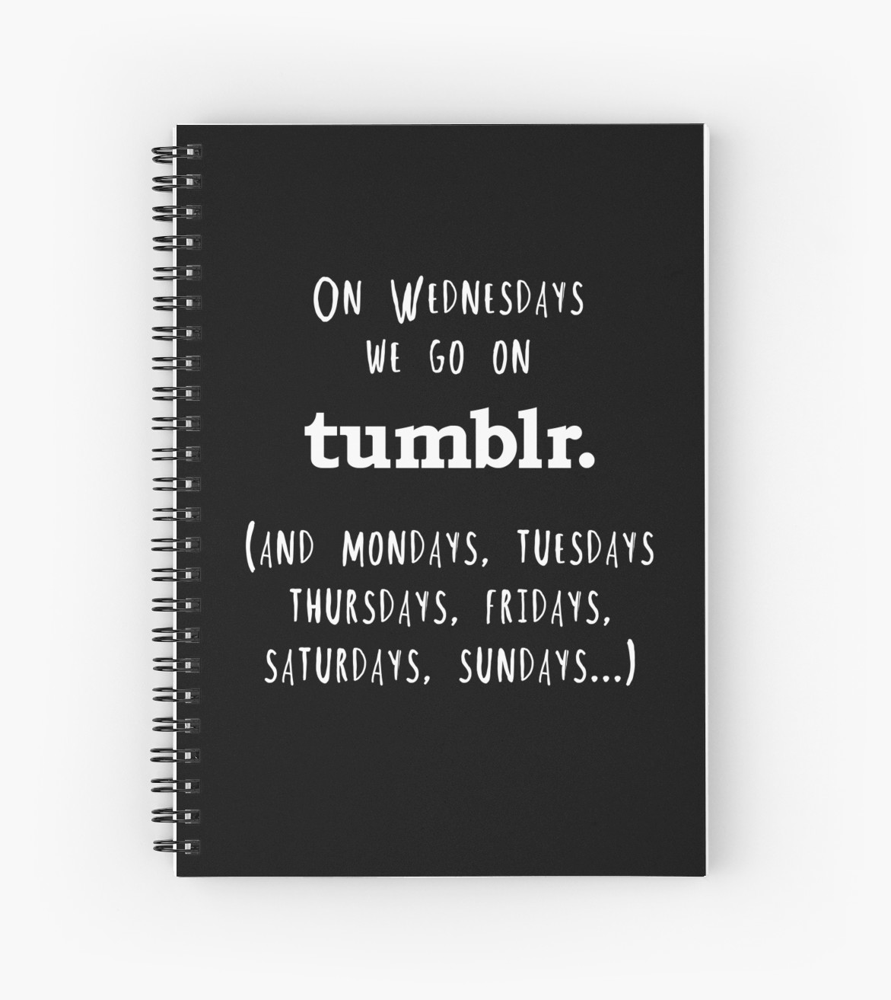

HELLO, ITS ME!
Welcome to blog of me
Siapa Saya
Ini Saya, Feb 6, 2018
Hai, kata orang tak sayang maka tak kenal. Persayangkan, nama saya Ayuliani Alifah. Receh ya? yaudahlah ya, saya malas untuk menghapus ketikannya, jadi lanjutkan ya? Saya kelas 11-3 SMK-SMAKBO. Tau kan? Kalau nggak tau, yaudah cari saja di google pasti banyak yang sudah bercerita tentang SMAKBO. Saya ini orang sunda tapi tidak bisa berbahasa sunda. Apalagi kalau ulangan bahasa sunda, saya ketar-ketir menghapalkan isi-isi ujiannya (eh) terimakasih untuk guru bahasa sunda yang sangat memaklumi kami para 'alien' tapi tetap saja sih saat ujian berlangsung saya tidak mengerti pertanyaannya, ah sudahlah. Oh iya, saya tinggal di Jakarta tepatnya di Jakarta Utara sebelum negara api menyerang. Sekarang, saya tinggal di kota Bogor yang sejuk dan rindang. Apalagi kalau habis hujan, bawaannya pengen tidur terus. Saya tinggal di sebuah kosan berwarna hijau bersama kakak-kakak dan adik-adik kelas serta teman-teman satu angkatan SMAKBO. Yah, sekian dulu perkenalannya, saya pegal. Salam dingin dari saya, gutdai.
Hobi?
Hobi Saya?, Feb 7, 2018
Hai, perkenalkan nama saya Ayuliani Alifah. Biasa dipanggil ayu walau sebenarnya nggak ayu, sih hehe. Semoga nama yang diberikan mama saya tercinta terkabul suatu saat nanti, amin. Saya lahir di kota Tasikmalaya pada tanggal 2 Juli ntahlah hari apa saya lupa. Mau liat ke akte, tapi malas sekali. Hobi saya adalah menulis dan membaca. Klasik ya? habis mau bagaimana lagi. Sebenarnya saya ingin menuliskan bahwa hobi saya tidur tapi bosan ah masa saya tidur melulu. Biar keliatan agak pinteran dikit aja sih bilang hobi saya menulis dan membaca. Oh iya, saya belum menuliskan secara detil saya suka menulis apa, saya suka menulis "ada pr apa?" di grup kelas dan saya suka membaca tulisan-tulisan indah pr milik teman saya lalu saya salin deh di buku, haha ENGGAK LAH! tapi kadang sih. Saya suka menulis cerita saya yang saya alami di social media (line/wattpad) semacam diary gitu deh tapi saya privat, jadi tidak ada satupun yang membacanya. Saya suka membaca novel-novel remaja masa kini juga, karena menurut saya asik aja gitu membayangkan masa sekolah yang menyenangkan yang dikelilingi sahabat-sahabat asik. Satu lagi sih, saya suka menonton film/drama romantis atau sedikit misteri tapi tidak menakutkan. Saya orangnya penakut sih dan kagetan jadi rada ngeri kalau menonton film horror atau misteri apalagi sendirian. Sudah dulu, ya? terimakasih banyak sudah membaca secuil tulisan saya. Salam dingin dari saya, gutdai.
Ayuliani Alifah
Seorang yang ling-lung tapi punya satu tujuan yaitu membahagiakan orangtua,
Popular Posts
-

CATATANKU
Ini catatanku, gengs. -
BAHAGIAKU
Apa sih bahagia? -
 JALAN-JALAN
JALAN-JALAN
yUk KiTa JaL4N-J4lan!

Tags
ME SMAKBO GAJEBO APAYA? SEKOLAH PENGALAMAN PERJALANAN ANIME KELUARGA FILM CERITA HAUL OLAHRAGA GAMES
Subscribe
Enter your e-mail below and get notified on the latest blog posts.